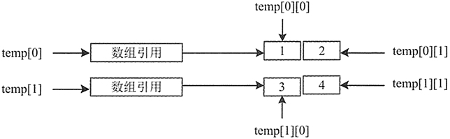

首页 > 编程笔记
Java二维数组详解：二维数组的声明和初始化，以及获取二维数组的值
为了方便组织各种信息，计算机常将信息以表的形式进行组织，然后再以行和列的形式呈现出来。二维数组的结构决定了其能非常方便地表示计算机中的表，以第一个下标表示元素所在的行，第二个下标表示元素所在的列。下面简单了解一下二维数组，包括数组的声明和初始化。
下面分别声明 int 类型和 char 类型的数组，代码如下：
上述代码创建了一个二行二列的二维数组 temp，并对数组中的元素进行了初始化。图 1 所示为该数组的内存结构。
使用第二种方式声明 int 类型的二维数组，然后初始化该二维数组。代码如下：
使用第三种方式声明 int 类型的二维数组，并且初始化数组。代码如下：
其中，array 表示数组名称，i 表示数组的行数，j 表示数组的列数。例如，要获取第二行第二列元素的值，应该使用 temp[1][1]来表示。这是由于数组的下标起始值为 0，因此行和列的下标需要减 1。
执行上述代码，输出结果如下：
如果要获取二维数组中的全部元素，最简单、最常用的办法就是使用 for 语句。
上述代码使用嵌套 for 循环语句输出二维数组。在输出二维数组时，第一个 for 循环语句表示以行进行循环，第二个 for 循环语句表示以列进行循环，这样就实现了获取二维数组中每个元素的值的功能。
执行上述代码，输出结果如下所示。
在该程序中，首先定义了一个二维数组，然后使用两个嵌套的 for 循环向二维数组中的每个元素赋值。其中，Math.random() 方法返回的是一个 double 类型的数值，数值为 0.6、0.9 等，因此乘以 10 之后为 10 以内的整数。最后又使用了两个嵌套的 for 循环遍历二维数组，输出二维数组中的值，从而产生矩阵。
运行该程序的结果如下所示。
执行上述代码进行测试，输出结果如下所示。
执行上述代码进行测试，如下所示。
创建二维数组
在 Java 中二维数组被看作数组的数组，即二维数组为一个特殊的一维数组，其每个元素又是一个一维数组。Java 并不直接支持二维数组，但是允许定义数组元素是一维数组的一维数组，以达到同样的效果。声明二维数组的语法如下：type array[][]; type[][] array;其中，type 表示二维数组的类型，array 表示数组名称，第一个中括号表示行，第二个中括号表示列。
下面分别声明 int 类型和 char 类型的数组，代码如下：
int[][] age; char[][] sex;
初始化二维数组
二维数组可以初始化，和一维数组一样，可以通过3种方式来指定元素的初始值。这 3 种方式的语法如下：
array=new type[][]{值 1,值 2,值 3,…,值 n};
array=new type[][]{new 构造方法(参数列),…};
type[][] array={{第1行第1列的值,第1行第2列的值,…},{第2行第1列的值,第2行第2列的值,…},…};
例 1
使用第一种方式声明 int 类型的二维数组，然后初始化该二维数组。代码如下：
int[][] temp;
temp=new int[][]
{
{1,2},{3,4}
};
上述代码创建了一个二行二列的二维数组 temp，并对数组中的元素进行了初始化。图 1 所示为该数组的内存结构。

图1 二维数组内存结构
图1 二维数组内存结构
使用第二种方式声明 int 类型的二维数组，然后初始化该二维数组。代码如下：
int[][] temp;
temp=new int [][]
{
{new int(1),new int(2)},{new int(3),new int(4)}
};
使用第三种方式声明 int 类型的二维数组，并且初始化数组。代码如下：
int[][] temp={{1,2},{3,4}};
获取单个元素
在上节使用 3 种方式创建并初始化了一个二行二列的 int 类型数组 temp。当需要获取二维数组中元素的值时，也可以使用下标来表示。语法如下：array[i-1][j-1];
其中，array 表示数组名称，i 表示数组的行数，j 表示数组的列数。例如，要获取第二行第二列元素的值，应该使用 temp[1][1]来表示。这是由于数组的下标起始值为 0，因此行和列的下标需要减 1。
例 2
通过下标获取 class_score 数组中第二行第二列元素的值与第四行第一列元素的值。代码如下：
public static void main(String[] args)
{
double[][] class_score={{10.0,99,99},{100,98,97},{100,100,99.5},{99.5,99,98.5}};
System.out.println("第二行第二列元素的值："+class_score[1][1]);
System.out.println("第四行第一列元素的值："+class_score[3][0]);
}
执行上述代码，输出结果如下：
第二行第二列元素的值：98.0 第四行第一列元素的值：99.5
获取全部元素
在一维数组中直接使用数组的 length 属性获取数组元素的个数。而在二维数组中，直接使用 length 属性获取的是数组的行数，在指定的索引后加上 length（如 array[0].length）表示的是该行拥有多少个元素，即列数。如果要获取二维数组中的全部元素，最简单、最常用的办法就是使用 for 语句。
例 3
使用 for 循环语句遍历 double 类型的 class_score 数组的元素，并输出每一行每一列元素的值。代码如下：
public static void main(String[] args)
{
double[][] class_score={{100,99,99},{100,98,97},{100,100,99.5},{99.5,99,98.5 }};
for(int i=0;i<class_score.length;i++)
{ //遍历行
for(int j=0;j<class_score[i].length;j++)
{
System.out.println("class_score["+i+"]["+j+"]="+class_score[i][j]);
}
}
}
上述代码使用嵌套 for 循环语句输出二维数组。在输出二维数组时，第一个 for 循环语句表示以行进行循环，第二个 for 循环语句表示以列进行循环，这样就实现了获取二维数组中每个元素的值的功能。
执行上述代码，输出结果如下所示。
class_score[0][0]=100.0 class_score[0][1]=99.0 class_score[0][2]=99.0 class_score[1][0]=100.0 class_score[1][1]=98.0 class_score[1][2]=97.0 class_score[2][0]=100.0 class_score[2][1]=100.0 class_score[2][2]=99.5 class_score[3][0]=99.5 class_score[3][1]=99.0 class_score[3][2]=98.5
例 4
假设有一个矩阵为 5 行 5 列，该矩阵是由程序随机产生的 10 以内数字排列而成。下面使用二维数组来创建该矩阵，代码如下：
public class Test11
{
public static void main(String[] args）
{
//创建一个二维矩阵
int[][] matrix=new int[5][5];
//随机分配值
for(int i=0;i<matrix.length;i++)
{
for(int j=0;j<matrix[i].length;j++)
{
matrix[i][j]=(int)(Math.random()*10);
}
}
System.out.println("下面是程序生成的矩阵\n");
//遍历二维矩阵并输出
for(int k=0;k<matrix.length;k++)
{
for(int g=0;g<matrix[k].length;g++)
{
System.out.print(matrix[k][g]+"");
}
System.out.println();
}
}
}
在该程序中，首先定义了一个二维数组，然后使用两个嵌套的 for 循环向二维数组中的每个元素赋值。其中，Math.random() 方法返回的是一个 double 类型的数值，数值为 0.6、0.9 等，因此乘以 10 之后为 10 以内的整数。最后又使用了两个嵌套的 for 循环遍历二维数组，输出二维数组中的值，从而产生矩阵。
运行该程序的结果如下所示。
34565 96033 48741 10583 63985
获取整行元素
除了获取单个元素和全部元素之外，还可以单独获取二维数组的某一行中所有元素的值，或者二维数组中某一列元素的值。获取指定行的元素时，需要将行数固定，然后只遍历该行中的全部列即可。例 5
编写一个案例，接收用户在控制台输入的行数，然后获取该行中所有元素的值。代码如下：
public static void main(String[] args)
{
double[][] class_score={{100,99,99},{100,98,97},{100,100,99.5},{99.5,99,98.5}};
Scanner scan=new Scanner(System.in);
System.out.println("当前数组只有"+class_score.length+"行，您想查看第几行的元素？请输入：");
int number=scan.nextInt();
for(int j=0;j<class_score[number-1].length;j++)
{
System.out.println("第"+number+"行的第["+j+"]个元素的值是："+class_score[number-1][j]);
}
}
执行上述代码进行测试，输出结果如下所示。
当前数组只有4行，您想查看第几行的元素？请输入： 3 第3行的第[0]个元素的值是：100.0 第3行的第[1]个元素的值是：100.0 第3行的第[2]个元素的值是：99.5
获取整列元素
获取指定列的元素与获取指定行的元素相似，保持列不变，遍历每一行的该列即可。例 6
编写一个案例，接收用户在控制台中输入的列数，然后获取二维数组中所有行中该列的值。代码如下：
public static void main(String[] args)
{
double[][] class_score={{100,99,99},{100,98,97},{100,100,99.5},{99.5,99,98.5}};
Scanner scan=new Scanner(System.in);
System.out.println("您要获取哪一列的值？请输入：");
int number=scan.nextInt();
for(int i=0;i<class_score.length;i++)
{
System.out.println("第 "+(i+1)+" 行的第["+number+"]个元素的值是"+class_score[i][number]);
}
}
执行上述代码进行测试，如下所示。
您要获取哪一列的值？请输入： 2 第 1 行的第[2]个元素的值是99.0 第 2 行的第[2]个元素的值是97.0 第 3 行的第[2]个元素的值是99.5 第 4 行的第[2]个元素的值是98.5
关注公众号「站长严长生」，在手机上阅读所有教程，随时随地都能学习。内含一款搜索神器，免费下载全网书籍和视频。

微信扫码关注公众号